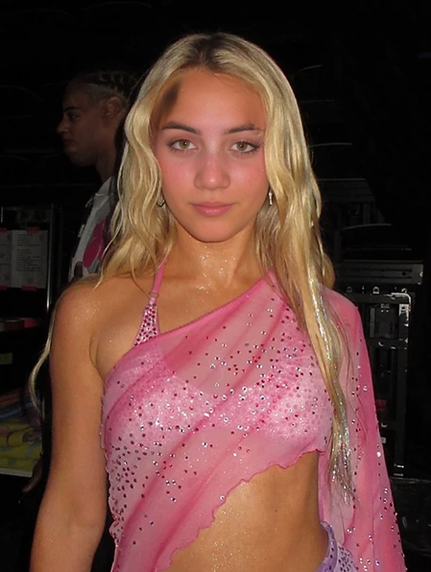

This page hosts a small, consented set of test images used to evaluate a prototype system for detecting unauthorized reuse of face photographs and flagging synthetic (deepfake) alterations. The set includes genuine photographs and synthetically altered versions of the same subject, used only for academic testing of reverse image search and deepfake detection pipelines.

Published for a university undergraduate thesis on digital identity protection. The subject has consented to the public use of these images for this research purpose only.